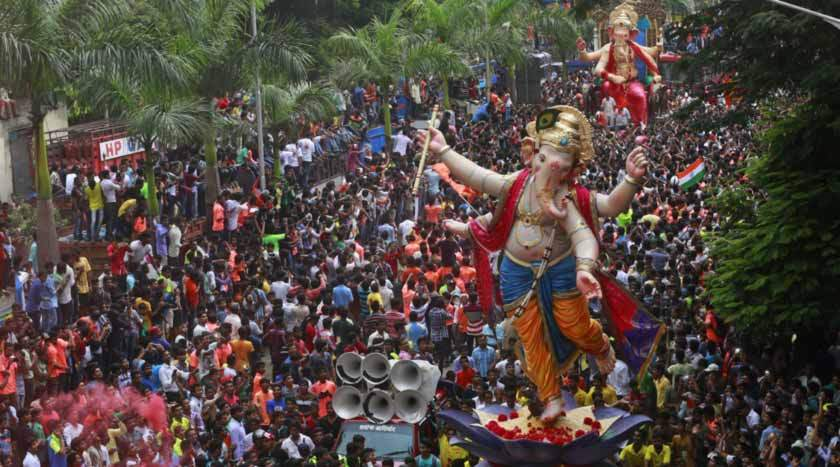
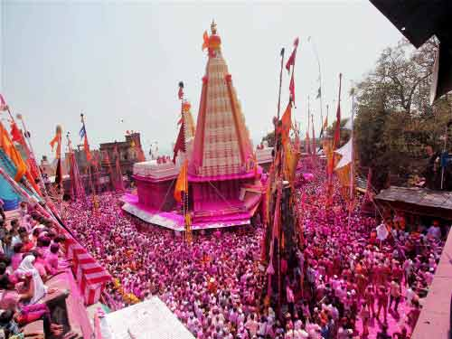
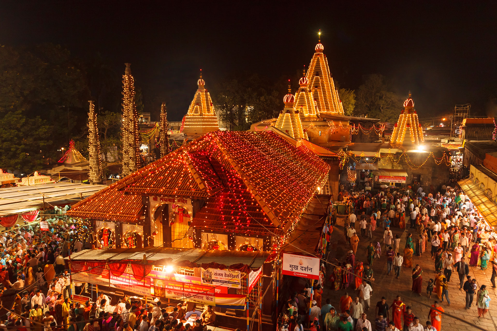
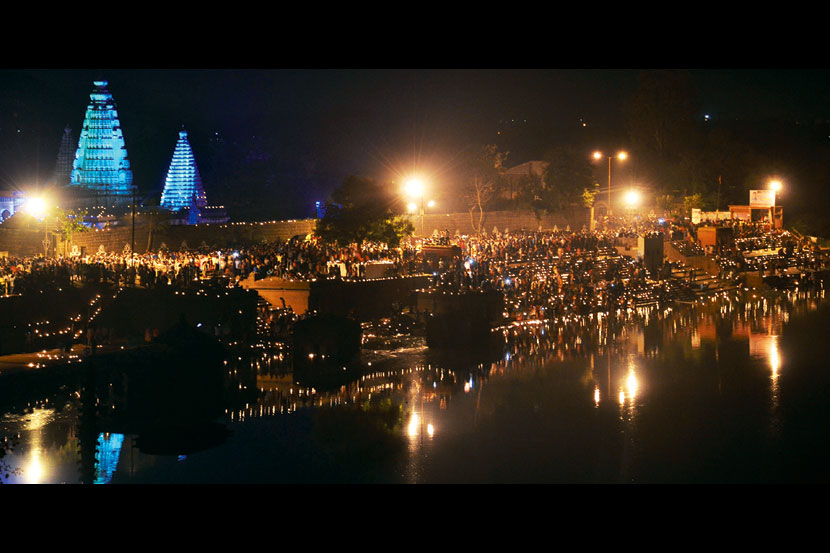

Festivals In Kolhapur




JANUARY – MARCH
Republic Day Parade at Chh. Shahu Stadium . 26 th January.
Shree Mahalakshmi Kiranotsava – A very unique and distinct astronomical phenomenon in which the evening sun-rays directly enter the temple and touch the holy feet of Goddess Mahalakshmi and then rise upwards as the sun sets, illuminating the whole of Goddess Mahalakshmi.
Kolhapur Rankala Mahotsava – Rankala Festival is an event marked by stage performances by renowned artists and various events & shows showcasing the art & talent on the lawns near Rankala lake arranged by kolhapur municipal corporation.
Gudi padava – On this day, Maharashtrians hang ‘Gudis’ outside the windows of their homes. They signify the victory of Maratha War fought by Chhatrapati Shivaji. They are displayed to thwart off evils. A ‘gudi’ is a pole on top with a kalash (brass or silver pot) hung upside down. It is covered with colorful silk cloth and decorated with coconuts, marigolds and mango leaves. This day is treated as an auspicious day( Muhurat), when people purchase gold or any other commodity.
Jyotiba yatra – A holy fair of lord Jyotiba on the hills near Panhala,. Thousands of people pay homage to the lord on the auspicious day marked by traditional ritual of getting the “Shasan Katti” all the way from their villages and hurling of Gulal all over as a shower of blessings.
APRIL – JUNE
Holi – Huge bonfires are sparked with logs of wood, basketful of cow dung cakes, ghee and honey. When the flames are burning bright, people walk and dance around the bonfire to pray to the God of Fire. Which is followed by Rangpanchmi about a week in Maharashtra. It is a festival of good harvest and fertility of land. It marks the arrival of arrival of spring where mirth and buoyancy is evident all round.
Rangpanchmi– Better known as festival of colours, celebrated by hurling colours to one another , as a symbol of spreading unity & fraternity among all religions.
JULY- SEPTEMBER
Naag Panchmi– Generally, devotees on this day worship live size cobras to seek their good will. To protect one self from snakebites, the snakes are bathed with milk. Haldi-kumkum (turmeric-vermicelli powder’) is sprinkled on their heads. Finally, milk and rice are offered as “naivedya”. A Village called ‘Battisshirala’ Near Kolhapur, celebrates this festival , wherein devotes offer milk to thousand of cobras there. But , currently this practiced is stopped to prevent unethical treatment to the reptiles.
Gokul Ashtami – Epitomizes lord Krishna’s childhood . This usually takes place on the second day of Janmashtami. On this day, an earthen pot containing a mixture of milk, dry fruits, ghee is hung around 20-30 feet high in the air with the help of a rope. Silver coins are hung along with the rope, which are later distributed as prize to the winners. Enthusiastic young men, form a human pyramid by standing one on top of the other, trying to break the pot. They chant the popular ‘Ala re ala, Govinda ala’ during the pot breaking ceremony. It is worth being a spectator during this event.
Ganesh Utsav– Lord Ganesha festival , marked by welcoming an idol of the lord at home & worshiping it for 5- 10days & then immersing it in holy waters to make a farewell . The idol is worshiped while at home as it brings wellness & prosperity to family. Big Mandals (social groups ) arrange for shows & performances as an entertainment to people. Kolhapur is well known for its huge tall ganapati idols (24-30 ft) & their immersion processions fanfare.
Independence Day – The national independence day being celebrated on 15th August. The independence day celebration includes hoisting of flag followed by parades & other cultural programmes. Kolhapur people celebrate this day in a unique way by distributing sweets like “jalebi” .
Boat Rowing Competitions– After rainy season , rivers flowing to the mark are best for boat rowing competitions. These competitions are held on Krishna river & Panchganga river near Norsobachiwadi. Currently rowing competition are being arranged in Rankala lake also.
Wrestling Competitions – Kolhapur is home town for world champion wrestlers. A tradition being carried on since Chhatrapati Shahu Maharaj, who himself was a wrestling lover. A city having many talims (training schools) for wresting learners, also has competitions wherein wrestlers from all over the world participate. International Players from Pakistan, Iran, Russia, etc have played with kolhapur wrestlers on Kolhapur grounds. Khasbag talim & other wrestling arenas in nearby villages play host to many competitions all year round.
Navratri – Meaning ‘Nine Nights’, a festival to please Goddess Mahalakshmi being worshipped for nine nights. Lakhs of Devotees throng for darshan of the goddess during this festival. The festival is marked by dandia & garba( Typical Gujarathi folk ) dance to please the goddess.
OCTOBER – DECEMBER
Dassera Mahotsav– A festival to celebrate the victory of lord Rama over Ravana by burning the effigy of Ravana in public. In Kolhapur , dassera is celebrated by taking out a procession of the present Chhatrapati Shahu Maharaj & the members of the royal Family, in a traditional attire. A procession worth a watch. Dassera Mahotsav celebrations lasts for three days with artists performances, wrestling & other competitions, & exhibition of local talents & food.
Tripurari Pournima – A full moon day celebration by lighting lamps along the banks of holy Panchganga river & also offering prasad to goddess.
Deepotsav at Panhala – A new trend being carried out by social groups wherein few places at panhala are lit up with lamps during No moon day. The calendar for the event has been set for the next few years.
Diwali– The word ‘Diwali’ means an array or row of lamps. The History of Diwali tells that it symbolizes the victory of good over evil. It commemorates Lord Rama’s return to his kingdom—Ayodhya after being in exile for 14 years. On this day, Lord Rama was crowned as the King of Ayodhya. It also marks the beginning of the Hindu calendar. Being celebrated by Hindus by worshipping goddess Mahalakshmi & distributing traditional sweets. Evenings are celebrated by bursting fire crackers & lighting up Aakshkandils (lanterns) at every home to mark the joy.
Christmas– Today, Christmas is the biggest and most-loved festival of Indian Christians. The festival is also enthusiastically celebrated by people of other religions residing here. The Midnight mass on Christmas Eve is a very important service and holds great religious significance. After the mass is over, everyone relishes a mouthwatering feast of, various delicacies. Thereupon, presents are given to one another and “Merry Christmas” is wished.
Moharram– Moharram festival marks the martyrdom of Hazrat Imam Hussain. Moharram is supposed to be the first month of Islamic calendar. Moharram is celebrated in kolhapur by all religious & social groups as the tradition is being set by Chhatrapati Shahu Maharaj.